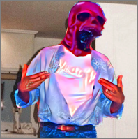
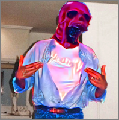
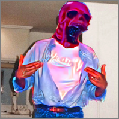
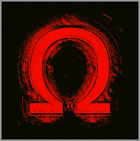

Exotic(?) circa 2022
Exotic Game Studios
Directory
(gangalang)

Exotic(?) circa 2022
Exotic
(Exotic_AAB)
Head Honcho of Exotic Game Studios
Also the main developer of stuff
Favourite song is DoYaThing

Omega
Omega
(OmegaaDev)
Certified cook, and overall great help
Also the better tester so far
Favourite song is MX
Danni
(danni_official)
Danni doesn't matter.